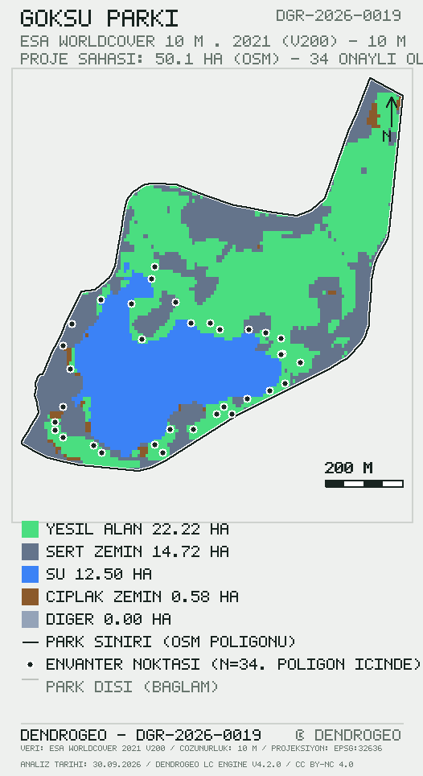

Göksu Parkı (Ankara): Bireysel Ağaç Envanteri ve Toprak Üstü / Toprak Altı Karbon Stoku
DGR-2026-0019DGR — DendroGeo Bilimsel Analiz RaporuGöksu Parkı Ağaç Envanteri, Karbon Stoku ve Arazi Örtüsü AnaliziAnkara, Türkiye30 Eylül 2026DendroGeo LC Engine v4.2.0 · DendroGeo v3.0.02021 (arazi örtüsü)saha ölçümleri: 2026-09-28 → 2026-09-2810 mway/423602737 · DB #2534 onaylı ölçüm · 18 tür50,11 ha (OSM poligonu)Nagihan ŞirinSite kurucuları: Nagihan Şirin, Sinan Şirin![DGR-2026-0019 kalıcı rapor adresinin QR kodu](data:image/svg+xml;charset=utf-8,%3Csvg%20xmlns%3D%22http%3A%2F%2Fwww.w3.org%2F2000%2Fsvg%22%20width%3D%22104%22%20height%3D%22104%22%20viewBox%3D%220%200%2031%2031%22%20shape-rendering%3D%22crispEdges%22%3E%3Cpath%20fill%3D%22%23ffffff%22%20d%3D%22M0%200h31v31H0z%22%2F%3E%3Cpath%20stroke%3D%22%23182420%22%20d%3D%22M1%201.5h7m3%200h1m4%200h1m3%200h2m1%200h7M1%202.5h1m5%200h1m3%200h1m1%200h1m2%200h1m1%200h2m1%200h1m1%200h1m5%200h1M1%203.5h1m1%200h3m1%200h1m1%200h1m2%200h1m3%200h1m2%200h3m1%200h1m1%200h3m1%200h1M1%204.5h1m1%200h3m1%200h1m1%200h4m3%200h3m1%200h1m2%200h1m1%200h3m1%200h1M1%205.5h1m1%200h3m1%200h1m1%200h2m1%200h1m1%200h1m2%200h1m1%200h2m2%200h1m1%200h3m1%200h1M1%206.5h1m5%200h1m1%200h1m1%200h1m1%200h1m1%200h3m1%200h1m1%200h1m1%200h1m5%200h1M1%207.5h7m1%200h1m1%200h1m1%200h1m1%200h1m1%200h1m1%200h1m1%200h1m1%200h7M9%208.5h1m3%200h3m4%200h2M1%209.5h1m1%200h5m2%200h3m1%200h1m1%200h3m4%200h5M1%2010.5h2m1%200h1m3%200h3m2%200h2m1%200h1m3%200h2m1%200h3m3%200h1M2%2011.5h1m2%200h4m2%200h1m1%200h2m1%200h2m1%200h1m2%200h1m2%200h1M3%2012.5h3m2%200h3m4%200h2m2%200h2m1%200h5m1%200h1M3%2013.5h3m1%200h5m1%200h1m2%200h1m1%200h1m2%200h1m4%200h2M1%2014.5h1m1%200h1m1%200h1m3%200h2m1%200h1m1%200h1m1%200h1m1%200h8m3%200h1M2%2015.5h1m4%200h1m1%200h2m1%200h5m1%200h1m2%200h1m1%200h1m2%200h2M2%2016.5h1m5%200h1m1%200h1m1%200h3m1%200h2m2%200h2m1%200h2m3%200h1M4%2017.5h1m1%200h4m2%200h2m1%200h1m1%200h2m1%200h1m5%200h2M1%2018.5h4m3%200h2m1%200h1m1%200h1m2%200h2m2%200h6m1%200h1m1%200h1M1%2019.5h1m1%200h2m1%200h2m2%200h3m5%200h2m4%200h2m1%200h1M1%2020.5h1m2%200h2m2%200h2m1%200h1m1%200h1m1%200h3m1%200h3m1%200h3m2%200h1M1%2021.5h1m4%200h4m1%200h2m4%200h9m1%200h3M9%2022.5h1m4%200h2m1%200h1m1%200h1m1%200h1m3%200h5M1%2023.5h7m4%200h6m1%200h3m1%200h1m1%200h3M1%2024.5h1m5%200h1m1%200h6m1%200h2m1%200h1m1%200h1m3%200h1m3%200h1M1%2025.5h1m1%200h3m1%200h1m1%200h3m1%200h1m1%200h1m1%200h2m2%200h5m1%200h3M1%2026.5h1m1%200h3m1%200h1m1%200h5m2%200h3m1%200h2m4%200h2M1%2027.5h1m1%200h3m1%200h1m1%200h1m1%200h1m4%200h1m1%200h1m1%200h9M1%2028.5h1m5%200h1m2%200h2m1%200h2m1%200h3m2%200h1m3%200h2m1%200h1M1%2029.5h7m1%200h2m1%200h1m4%200h1m1%200h2m3%200h2m1%200h1%22%2F%3E%3C%2Fsvg%3E%0A) https://dendrogeo.org/rapor/DGR-2026-0019/
https://dendrogeo.org/rapor/DGR-2026-0019/CC BY-NC 4.0sha256:37af90b064c52333cb01…Bu rapor, DendroGeo analiz sistemi tarafından belirlenen yöntem, veri kaynakları ve kalite kontrol prosedürleri doğrultusunda oluşturulmuştur. Rapor bir akreditasyon veya sertifikasyon belgesi değildir; bulgular, beyan edilen veri kaynakları ve çözümleme sürümü kapsamında geçerlidir.
1Analiz Özeti
Bu rapor, Göksu Parkı sınırları içerisinde gerçekleştirilen 34 bireysel ağaç ölçümüne (göğüs çapı, boy, tür, GNSS konumu ve fotoğraf kanıtı) dayalı toplam karbon stokunu, %95 güven aralığı ve bağımsız doğrulama izleri ile birlikte sunmaktadır. Toplam karbon stoku 52.29 t [%95 GA: 28.80–73.91] olarak hesaplanmış; hektara karşılığı 1,044 t/ha olarak bulunmuştur. Bütün kayıtlar moderatör onayından geçirilmiştir; park poligonu konum çiti denetiminin kayıt düzeyindeki sonucu §7'de raporlanmıştır. Arazi örtüsü bağlamı ESA WorldCover 10 m · 2021 (v200) ürünüyle üretilmiş; kalite kontrol sonuçları Çizelge 4'te sunulmuştur.
2Analiz Alanı
Analiz alanı, Ankara (Türkiye) sınırları içinde yer alan Göksu Parkı park sahasıdır. Saha sınırı, uygulamada çizilen park poligonundan (parks.geom_json) türetilmiş olup 50,11 ha alan kaplamaktadır. Envanter, 2026-09-28 – 2026-09-28 tarihleri arasında 34 ölçüm noktasında gerçekleştirilmiştir; kayıtların tamamı poligon içinde konumlanmaktadır (denetim §7).
3Veri Kaynakları
3.1 Birincil veri. ESA WorldCover 10 m · 2021 (v200): Sentinel-1 ve Sentinel-2 füzyonundan üretilmiş küresel arazi örtüsü ürünü; mekânsal çözünürlük 10 m; veri dönemi 2021; lisans CC BY 4.0. Erişim, STAC kataloğu (Planetary Computer) üzerinden park poligonunu kesen karolar için gerçekleştirilmiştir.
3.2 Bütünleyici veri. OpenStreetMap (ODbL): park sınırı geometrisi ile su ve açıkça tanımlanmış sert yüzeylerin geometrik doğrulaması/iyileştirmesi amacıyla kullanılmıştır. OSM verisi raster sınıflandırmanın yerine geçmez: sınıf alanları birincil raster üründen hesaplanır; OSM yalnız sınır geometrisi ve bağımsız kontrol için kullanılır.
3.3 Saha verisi. 34 adet DendroGeo saha ölçümü (DBH, boy, tür, GNSS konumu, fotoğraf kanıtı); tümü moderatör onaylıdır. Ölçüm kuralları DendroGeo Saha Protokolü v1'de tanımlıdır.
3.4 Çapraz doğrulama verisi. IO LULC 10 m · 2020 (çapraz doğrulama): bağımsız ikinci sınıflandırma kaynağı; grup bazlı uzlaşma §7'de raporlanır.
4Yöntem
4.1 Saha protokolü. Göğüs çapı (DBH; Diameter at Breast Height), ağacın yerden 1,30 m yükseklikteki gövde çapıdır ve sahada santimetre (cm) cinsinden ölçülerek doğrudan kaydedilmiştir. Kaydedilen DBH değerleri, herhangi bir çevre→çap dönüşümü uygulanmadan, olduğu gibi allometrik modelin girdisi olarak kullanılmıştır (DBH = göğüs çapı, cm). Ağaç boyu sahada ölçülmüş (kayıt çözünürlüğü 0,1 m); konum sivil GNSS alıcısıyla kaydedilmiş — ancak alıcı doğruluk değeri (accuracy_m) bu veri sürümünde kaydedilmediğinden GNSS hassasiyeti sayısal olarak beyan edilememektedir; konumsal doğrulama park poligonu üyelik testiyle sınırlıdır (§7); her kayıt için sahada çekilmiş fotoğraf kanıtı zorunlu tutulmuş ve tüm kayıtlarda sağlanmıştır.
4.2 Biyokütle ve karbon. Karbon stoku; sahada ölçülen DBH (göğüs çapı, cm), ağaç boyu (m) ve tür/odun yoğunluğu parametreleri kullanılarak uygulanan allometrik model üzerinden hesaplanmıştır. Hesaplama zinciri: DBH (cm) → boy (m) → odun yoğunluğu (ρ) → AGB → BGB → karbon → belirsizlik. Toprak üstü biyokütle (AGB), Chave ve ark. (2014) pantropikal allometrik denklemiyle hesaplanmıştır: AGB = 0.0673·(ρ·D²·H)^0.976; burada D = sahada ölçülen göğüs çapı (DBH), cm — modele olduğu gibi girer, herhangi bir çevre→çap dönüşümü uygulanmaz; ρ odun yoğunluğu (g/cm³), H ağaç boyu (m). Toprak altı biyokütle (kök biyokütlesi) AGB×0.26, karbon stoku ise toplam biyokütlenin 0.47 katsayısı ile çarpımı olarak tanımlanmıştır. Tür yoğunluğu bulunmadığında grup varsayılanı (iğne yapraklı / geniş yapraklı) kullanılmış ve Çizelge 1'de beyan edilmiştir.
4.3 Belirsizlik. Girdi belirsizlikleri (§4.1) ve allometrik model belirsizliği (%22 değişim katsayısı) Monte Carlo yöntemiyle (n=1000, sabit tohum=20260926) yayılmıştır; model hatası kayıtlar arasında korele kabul edilmiştir, zira aynı denklem tüm kayıtlarda ortak yönde sapma üretir. Güven aralığı, örneklem dağılımının 2.5 ve 97.5 yüzdebirlikleri olarak raporlanmıştır.
4.4 Arazi örtüsü sınıflandırması. Arazi örtüsü sınıflandırması, park sınırı içerisinde mekânsal çözünürlüğü 10 m olan raster veri (ESA WorldCover 10 m · 2021 (v200)) ile gerçekleştirilmiştir. Sınıflandırma sonuçları park geometrisi ile kesiştirilerek değerlendirilmiş; sınır hücrelerinde alan ağırlıklı hesaplama uygulanmıştır (analiz projeksiyonu: EPSG:32636 (UTM 36N)). Bulut/gölge gölgesinde kalan hücreler maskelenmiş ve sınıf toplamına dahil edilmemiştir. Raster kapsama alanı ile park geometrisi alanı arasındaki bağıl fark %0,5 eşiğini aşarsa sonuç YAYINLANMAZ; bu sürümde fark %0,196 olarak ölçülmüştür (Çizelge 3).
4.5 Doğrulama zinciri. (i) Her kayıt moderatör onayı gerektirir (34/34 kayıt 'Onaylı' durumundadır; zaman damgalı onay kaydı 34/34); (ii) ölçüm konumunun park poligonu içinde olması veritabanı tetiği ile zorunlu kılınmıştır (trg_geo_fence; zorunluluk, 0007 geçişinden sonraki kayıtlara uygulanır, önceki kayıtlar için kayıt düzeyindeki denetim sonucu §7'de beyan edilir); (iii) arazi örtüsü çözümlemesinde raster/park alan farkı %0,5 eşiğini aşarsa sonuç yayınlanmaz; (iv) yayınlanan sayfanın içerik bütünlüğü SHA-256 hash'i ile açılışta canlı doğrulanır (§7).
4.6 Veri sözlüğü. Raporda ve data.json/olcum.csv çıktılarında kullanılan değişkenlerin anlamı ve birimi aşağıdadır.
| Değişken | Açıklama | Birim |
|---|---|---|
| DBH | Göğüs çapı — yerden 1,30 m yükseklikte ölçülen gövde çapı | cm |
| Boy (H) | Ağaç boyu | m |
| ρ (rho) | Odun yoğunluğu (tür bazlı; bulunamazsa grup varsayılanı) | g/cm³ |
| AGB | Toprak üstü biyokütle | kg |
| BGB | Toprak altı (kök) biyokütlesi = AGB × 0,26 | kg |
| Karbon | Tahmini karbon stoku = (AGB + BGB) × 0,47 | kg C |
| GA | %95 güven aralığı (Monte Carlo, korele model hatası) | kg C |
| h/DBH | Boy/çap oranı — yalnız inceleme göstergesi, hata hükmü değildir | birimsiz |
Ölçüm notu: Bu raporda DBH, göğüs yüksekliğinde (1,30 m) ölçülen gövde çapını ifade eder ve cm cinsindendir. DBH değerleri karbon hesabına herhangi bir çevre→çap dönüşümü uygulanmadan, doğrudan model girdisi olarak kullanılmıştır.
5Nicel Sonuçlar
5.1 Karbon stoku. Çizelge 1 tür bazlı özet istatistikleri, Şekil 1 ise karbon paylarının dağılımını vermektedir.
| Tür | Grup | n | Ort. DBH (cm) | Ort. boy (m) | Karbon (kg) | Pay |
|---|---|---|---|---|---|---|
| SÜS ERİĞİ | YAPRAKLI | 3 | 98,0 | 9,0 | 4.492,8 | %8,6 |
| SALKIM SÖĞÜT | YAPRAKLI | 6 | 131,8 | 10,9 | 22.024,9 | %42,1 |
| HALEP ÇAMI | İBRELİ | 1 | 57,0 | 9,3 | 459,3 | %0,9 |
| CEVİZ | YAPRAKLI | 1 | 90,0 | 8,3 | 1.124,6 | %2,2 |
| KARAÇAM | İBRELİ | 2 | 94,5 | 11,6 | 3.069,9 | %5,9 |
| DOĞU ÇINARI | YAPRAKLI | 1 | 84,0 | 6,9 | 820,7 | %1,6 |
| MAVİ LADİN | İBRELİ | 2 | 115,0 | 9,6 | 4.168,7 | %8,0 |
| AT KESTANESİ | YAPRAKLI | 4 | 82,0 | 9,5 | 4.713,8 | %9,0 |
| KARAAĞAÇ | YAPRAKLI | 1 | 70,0 | 7,1 | 623,7 | %1,2 |
| GÖKNAR | İBRELİ | 1 | 53,0 | 6,8 | 215,7 | %0,4 |
| ATLAS SEDİRİ | İBRELİ | 1 | 128,0 | 11,3 | 2.475,0 | %4,7 |
| DİŞBUDAK | YAPRAKLI | 2 | 106,0 | 6,9 | 2.987,9 | %5,7 |
| DUT | YAPRAKLI | 2 | 67,5 | 4,9 | 789,1 | %1,5 |
| IHLAMUR | YAPRAKLI | 1 | 40,0 | 4,5 | 127,3 | %0,2 |
| AKÇAAĞAÇ | YAPRAKLI | 3 | 76,7 | 8,5 | 2.567,9 | %4,9 |
| KATALPA | YAPRAKLI | 1 | 63,0 | 7,8 | 528,5 | %1,0 |
| LADİN | İBRELİ | 1 | 78,0 | 10,0 | 683,0 | %1,3 |
| SIĞLA | YAPRAKLI | 1 | 57,0 | 7,5 | 418,4 | %0,8 |
Ölçüm notu: Bu raporda DBH, göğüs yüksekliğinde (1,30 m) ölçülen gövde çapını ifade eder ve cm cinsindendir. DBH değerleri karbon hesabına herhangi bir çevre→çap dönüşümü uygulanmadan doğrudan model girdisi olarak kullanılmıştır (değişken tanımları: §4.6 veri sözlüğü). Gövde çapı notu: bu envanterde ölçülen gövde çapı aralığı 40–200 cm (medyan 86 cm, n=34). Değerler sahada ölçüldüğü gibi modellenmiştir; herhangi bir düzeltme, ölçekleme veya dışlama uygulanmamıştır (§9 sınırlılıklar).
5.2 Arazi örtüsü. Sınıf alanları Çizelge 2'de sunulmuştur; mekânsal dağılım §6'da (Şekil 2) gösterilmektedir.
| Sınıf | Alan (ha) | Pay |
|---|---|---|
| Yeşil alan | 22,22 | %44,4 |
| Su | 12,50 | %25,0 |
| Sert zemin | 14,72 | %29,4 |
| Çıplak zemin | 0,58 | %1,2 |
| Diğer | 0,00 | %0,0 |
5.3 Alan dengesi. Çizelge 3, park geometrisi ile raster kapsama alanının karşılaştırmasını verir; bu karşılaştırma sonuçların üretilmesinden ÖNCE hesaplama bütünlüğünün kontrol edildiğini belgeler.
| Büyüklük | Değer |
|---|---|
| Park geometrisi alanı | 50,11 ha |
| Analiz edilen alan (raster kapsama) | 50,01 ha |
| Sınıflandırılan alan | 50,01 ha |
| Alan farkı | -0,10 ha |
| Alan farkı (%) | 0,196 % |
6Harita

7Kalite Kontrol ve Doğrulama
Sonuçlar üretilmeden önce hesaplamanın bütünlüğü aşağıdaki kontrollerle doğrulanmıştır (Çizelge 4). Kontroller otomatiktir. Rapor QA durumu üç hâllidir: 🔴 BLOKLU — kritik veri hatası vardır, karbon sonucu bilimsel iletişimde kullanılmamalıdır; 🟡 İNCELEME — veri geçerlidir, bazı istatistiksel kontroller inceleme uyarısı vermektedir; 🟢 GEÇERLİ — tüm kritik kontroller geçmiştir. Bu raporun QA durumu: 🟡 İNCELEME — inceleme kalemleri: GNSS alıcı doğruluğu (accuracy_m) kaydedilmemiş. Bu uyarılar birer inceleme kalemidir; veri hatası hükmü DEĞİLDİR ve karbon sonucunun geçerliliğini ortadan kaldırmaz. Bu rapordaki inceleme kalemlerinin HİÇBİRİ ağaç ölçüm değerleriyle (DBH, boy, tür, karbon) ilgili DEĞİLDİR: envanter kontrollerinin tümü geçerlidir; kalan kalem/kalemler ölçülemeyen veya kaydedilmeyen üst veri alanlarıdır (ör. GNSS alıcı doğruluğu accuracy_m boş bırakılmışsa bu kontrol koşamaz). Karbon hesabı, saha ölçümlerinde kayıtlı DBH (göğüs çapı, cm) değerleri kullanılarak gerçekleştirilmiştir.
| Kontrol | Sonuç | Ayrıntı |
|---|---|---|
| Park geometrisi | ✓ Geçerli | parks.geom_json (uygulamada çizilen sınır) · 50,11 ha · kendini kesme yok (tarandı) |
| Raster kapsama | ✓ Geçerli | 7864 kaynak hücre · kapsama 50,01 ha |
| Alan dengesi | ✓ Geçerli | raster/park alan farkı %0,196 (eşik %0,500) |
| Hücre–kesit hesabı | ✓ Geçerli | tam poligon–hücre kesişimi; sınır hücrelerinde alan ağırlıklı hesap |
| Veri kaynağı | ✓ Geçerli | ESA WorldCover 10 m · 2021 (v200) · yıl 2021 · 10 m |
| Sınıflandırma | ✓ Geçerli | 5 sınıf · maskeli alan yok |
| Çapraz doğrulama | ✓ Geçerli | IO LULC 10 m · 2020 (çapraz doğrulama) uzlaşması: green %0, water %94, hard %55, bare %0, other %100 |
| Tür sözlüğü eşleşmesi | ✓ Geçerli | 34/34 kayıt kanonik tür sözlüğüyle eşleşti |
| Fotoğraf kanıtı | ✓ Geçerli | 34/34 kayıt sahada çekilmiş fotoğraf bağlantısı taşıyor |
| GNSS doğruluk kaydı | ⚠ Kaydedilmedi | 0/34 kayıtta accuracy_m değeri var — GNSS hassasiyeti bu sürümde SAYIYLA beyan edilemiyor; park üyeliği poligon testiyle doğrulandı |
| Envanter birim kontrolü (DBH) | ✓ Geçerli | 34/34 kayıtta DBH mevcut, sayısal, pozitif ve cm biriminde 1–400 aralığında · Birim kontrolü: DBH değerleri çap (cm) olarak değerlendirilmiştir; çevre→çap dönüşümü uygulanmamıştır |
| Boy/DBH oranı incelemesi | ✓ Geçerli | 34/34 kayıt boy/çap oranı fiziksel makullük bandında (3–200) ve stand içi robust aykırılık testinde aykırı kayıt YOK (modified z eşiği 3,5) · stand dağılımı: medyan 9,65, MAD 1,575, aralık 5,33–16,32, en yüksek |z| 2,86 · 32/34 kayıt tipik 15–120 bandının dışında: bu bir UYARI DEĞİL, BİLGİDİR — bu envanterin boy/çap dağılımı (medyan 9,65) tipik orman bandının altında kalıyor; sabit bant karşılaştırması dağılım bilgisidir, kayıt bazlı hata hükmü değildir · ölçülen gövde çapı aralığı 40–200 cm (medyan 86 cm, n=34) |
| Karbon yeniden hesabı | ✓ Geçerli | 34/34 kayıt panel denklemiyle (Chave 2014 + kanonik ρ tablosu) ±%20 içinde yeniden üretildi — bant dışı kayıt YOK · 13 kayıt tür düzeyi ρ ile eşleşti · 21 kayıt grup varsayılanı ρ ile eşleşti · 6 kayıtta (P3, P8, P15, P23, P28, P32) saklı değer GRUP VARSAYILANI ρ ile yeniden üretildi; aynı kayıt tür düzeyi ρ ile ±%20 bandını aşıyor (örnek P3 SALKIM SÖĞÜT: tür ρ=400 → 4.617,1 kg, %34,0 · grup ρ=541 → 6.199,5 kg, %-0,2). Bu bir ÖLÇÜM HATASI DEĞİLDİR: saklı karbon, değeri üreten ρ tablosuyla tutarlıdır. Denetim bu nedenle iki ρ kaynağını da kabul eder ve hangi kaynağın eşleştiğini sayıyla beyan eder; karbon motoru ve katsayılar DEĞİŞTİRİLMEMİŞTİR |
| Konum çiti | ✓ Geçerli | 34/34 kayıt poligon içinde |
| Moderasyon | ✓ Geçerli | 34/34 kayıt onaylı · zaman damgası 34/34 |
| Rapor üretimi | ✓ Geçerli | içerik hash'i sha256:37af90b064c52333… (canlı doğrulama §7'de) |
DGR-2026-0019 · sürüm 1.0 · yayın 2026-09-30İçerik hash'i:
sha256:37af90b064c52333cb01e159841fecc9bb0d6fe49d902628f3733f469d8498b6⏳ içerik bütünlüğü hesaplanıyor…
✅ Konum çiti: 34/34 kayıt park poligonu içinde doğrulanmıştır.
✅ Moderasyon: 34/34 kayıt onaylı ve zaman damgalıdır.
🔗 Kalıcı kimlik: DGR-2026-0019 + içerik hash'i.
8Değerlendirme
Arazi örtüsü sınıflandırmasına göre analiz alanının yeşil alan %44,4; sert yüzey %29,4; su %25,0; açık/çıplak alan %1,2 şeklinde dağıldığı belirlenmiştir; baskın sınıf %44,4 pay ile Yeşil alan sınıfıdır.
Ölçülen 34 bireyin toplam karbon stoku 52.29 t [%95 GA: 28.80–73.91] olarak hesaplanmış; stokun yapraklı türlerde %78,8, ibreli türlerde %21,2 biriktiği görülmüştür. Hektar başına karşılık 1,044 t/ha düzeyindedir.
Örneklem 34 bireysel ölçüme dayanmaktadır; sonuçlar ölçülen bireylerin toplamını verir ve parkın ölçülmeyen bölümlerine ekstrapole edilmemelidir.
Bu bölüm yalnızca ölçüm ve sınıflandırma sonuçlarından türetilen betimleyici ifadeleri içerir; normatif değerlendirme (ör. “iyi durumda”, “yetersiz”) yapılmamıştır.
9Sınırlılıklar
- Arazi örtüsü sonuçları, kullanılan veri kaynağının mekânsal çözünürlüğü, veri edinim tarihi ve sınıflandırma doğruluğu ile sınırlıdır. 10 m çözünürlükteki veri, küçük ve dar yüzeylerin bağımsız olarak temsil edilmesini her durumda mümkün kılmayabilir.
- OSM verileri yardımcı geometrik doğrulama amacıyla kullanılmış olup, eksik veya güncel olmayan OSM geometrileri analiz sonucunun tek başına belirleyicisi değildir.
- Chave ve ark. (2014) pantropikal bir modeldir; Türkiye türleri için bölgesel kalibrasyon gerçekleştirilmemiştir.
- Örneklem büyüklüğü (n=34) sınırlıdır; park geneline ekstrapolasyon, güven aralığı ile birlikte dahi ihtiyatla yorumlanmalıdır.
- GNSS alıcı doğruluğu (accuracy_m) bu veri sürümünde kaydedilmemiştir; konumsal doğrulama park poligonu üyelik testiyle sınırlıdır ve bireysel nokta hassasiyeti sayısal olarak beyan edilemez.
- Boy/çap oranı 32/34 kayıtta tipik 15–120 bandının dışındadır; bu bir UYARI DEĞİL, dağılım bilgisidir. Ölçüt olarak sabit bant yerine standın kendi dağılımı kullanılmış (medyan 9,65, MAD 1,575, aralık 5,33–16,32, en yüksek |z| 2,86; eşik 3,5) ve hiçbir kayıt aykırı bulunmamıştır. Oranın düşük kalması ölçülen gövde çaplarıyla ilgilidir — aralık 40–200 cm (medyan 86 cm, n=34): paydada büyük bir çap varken boy tipik orman değerlerinde kaldığında oran matematiksel olarak düşer. Bu bir form karakteridir, ölçüm hatası değildir.
- Bu rapor, ölçülen hiçbir birey için yasal statü değerlendirmesi (tescil, koruma kararı vb.) içermez; ağaçların yasal statüsü ilgili idarenin yetkisindedir ve bu çalışmanın kapsamı dışındadır. Envanter değerleri sahada ölçüldüğü gibi modellenmiştir; hiçbir düzeltme, ölçekleme veya dışlama uygulanmamıştır.
- Gövde çapı dağılımı ve model temsili. Bu envanterde ölçülen gövde çapı aralığı 40–200 cm (medyan 86 cm, n=34). Değerler sahada ölçüldüğü gibi modellenmiştir; hiçbir düzeltme, ölçekleme veya dışlama uygulanmamıştır. Sınırlılık veride değil model temsilindedir: kullanılan allometrik model (Chave ve ark. 2014) pantropikal bir kalibrasyon örneklemine dayanır; geniş gövdeli kent ağaçları bu örnekleme eşit ağırlıkla girmediği için büyük çaplı bireylerde model belirsizliği daha geniştir ve bu belirsizlik %95 güven aralığına yansıtılmıştır.
- Odun yoğunluğu (ρ) kaynağı. Karbon yeniden hesap denetiminde 6 kayıtta (P3, P8, P15, P23, P28, P32) saklı karbon GRUP VARSAYILANI ρ ile yeniden üretilmiştir; aynı kayıtlar tür düzeyi ρ ile karşılaştırıldığında ±%20 bandını aşar (örnek SALKIM SÖĞÜT: tür ρ=400 kg/m³ → 4.617,1 kg, %34,0 · grup ρ=541 kg/m³ → 6.199,5 kg, %-0,2). İki kaynak arasındaki ρ farkı %35 düzeyindedir; model ρye 0,976 üssüyle duyarlı olduğundan bu fark karbon tahminine yaklaşık aynı oranda yansır. Sınırlılık: tür düzeyi ρ için bölgesel kalibrasyon yoktur ve ρ seçimi tür bazlı karbon tahminini bu ölçekte etkileyebilir. Denetim bu nedenle HER İKİ ρ kaynağını kabul eder, hangisinin eşleştiğini §7de sayıyla beyan eder; karbon motoru, katsayılar, saklı değerler ve CSV çıktısı DEĞİŞTİRİLMEMİŞTİR.
10Tekrar Üretilebilirlik
| Öğe | Kayıt |
|---|---|
| Analiz sürümü | DendroGeo LC Engine 4.2.0 · uygulama 3.0.0 |
| Veri seti | ESA WorldCover 10 m · 2021 (v200) |
| Çözünürlük | 10 m |
| Park geometrisi | kayıtlı (way/423602737; yayın anındaki sınır) |
| Analiz yöntemi | sürüm kontrollü (git commit d1bcc85) |
| Üretim komutu | node scripts/make-report.mjs --park 25 |
Bu raporun yeniden üretilebilmesi için kullanılan yöntem, veri kaynağı ve analiz sürümü rapor üst verisinde (metadata.json) kayıt altına alınmıştır. Raster girdi bulut kataloğundan okunduğu için, kaynak ürünün YENİ bir sürümü yayımlanırsa aynı komut farklı sonuç üretebilir; bu nedenle veri seti sürümü (v200, 2021) ve üretim anı §11'de sabitlenmiştir.
11Analiz Parmak İzi
12Rapor Geçmişi
| Rapor | Sürüm | Tarih | İşlem |
|---|---|---|---|
DGR-2026-0003 | 1.0 | 2026-09-28 | Aynı parkın önceki analizi (geri çekildi) |
DGR-2026-0004 | 1.0 | 2026-09-28 | Aynı parkın önceki analizi (geri çekildi) |
DGR-2026-0005 | 1.0 | 2026-09-28 | Aynı parkın önceki analizi (geri çekildi) |
DGR-2026-0006 | 1.0 | 2026-09-28 | Aynı parkın önceki analizi (geri çekildi) |
DGR-2026-0007 | 1.0 | 2026-09-29 | Aynı parkın önceki analizi (geri çekildi) |
DGR-2026-0008 | 1.0 | 2026-09-29 | Aynı parkın önceki analizi (geri çekildi) |
DGR-2026-0010 | 1.0 | 2026-09-29 | Aynı parkın önceki analizi (geri çekildi) |
DGR-2026-0011 | 1.0 | 2026-09-29 | Aynı parkın önceki analizi (geri çekildi) |
DGR-2026-0012 | 1.0 | 2026-09-29 | Aynı parkın önceki analizi (geri çekildi) |
DGR-2026-0013 | 1.0 | 2026-09-29 | Aynı parkın önceki analizi (geri çekildi) |
DGR-2026-0015 | 1.0 | 2026-09-29 | Aynı parkın önceki analizi (geri çekildi) |
DGR-2026-0016 | 1.0 | 2026-09-29 | Aynı parkın önceki analizi (geri çekildi) |
DGR-2026-0017 | 1.0 | 2026-09-30 | Aynı parkın önceki analizi (geri çekildi) |
DGR-2026-0018 | 1.0 | 2026-09-30 | Aynı parkın önceki analizi (geri çekildi) |
DGR-2026-0019 | 1.0 | 2026-09-30 | İlk yayımlama (bu rapor · geçerli sürüm) |
Yayımlanmış rapor içeriği değiştirilemez. Düzeltme gerekirse rapor geri çekilir (yayın panelinde 🗑) ve aynı park için yeni DGR kimliğiyle yeniden yayımlanır; bu tablo zinciri gösterir. Geri çekme işlemleri rapor/yayin-kuyrugu.json günlüğünde ve git geçmişinde saklanır.
13Atıf
Şirin, N. (2026). Göksu Parkı ağaç envanteri ve karbon stoku raporu. DendroGeo Bilimsel Analiz Raporu, DGR-2026-0019 (sürüm 1.0). DendroGeo. https://dendrogeo.org/rapor/DGR-2026-0019/
https://doi.org/… eklenir; DGR kimliği ve sürüm bilgisi değişmez. Yöntem atıfları: Chave ve ark. (2014) 10.1111/gcb.12629 · ESA WorldCover 10 m 2021 v200, CC BY 4.0 · OpenStreetMap katkıcıları (ODbL).@techreport{dgr20260019,
author = {Şirin, N.},
contributor = {Şirin, Nagihan and Şirin, Sinan},
title = {Göksu Parkı ağaç envanteri ve karbon stoku raporu},
year = {2026},
number = {DGR-2026-0019},
version = {1.0},
publisher = {DendroGeo},
url = {https://dendrogeo.org/rapor/DGR-2026-0019/},
note = {sha256:37af90b064c52333…}
}
14Kaynakça
- Zanaga, D., Van De Kerchove, R., De Keersmaecker, W. ve ark. (2022). ESA WorldCover 10 m 2021 v200 [veri seti]. Zenodo.
10.5281/zenodo.7254221(CC BY 4.0). - Chave, A., Réjou-Méchain, M., Barbier, N. ve ark. (2014). Pantropikal ağaçlar için geliştirilmiş allometrik biyokütle modelleri. Global Change Biology, 20(10), 3177–3190.
10.1111/gcb.12629— §4.2'de kullanılan allometrik denklem. - OpenStreetMap katkıcıları. OpenStreetMap verisi [park sınırı geometrisi ve bütünleyici doğrulama]. Open Database License (ODbL). https://www.openstreetmap.org/copyright
- IO LULC 10 m · 2020 (çapraz doğrulama) [çapraz doğrulama veri seti] — grup bazlı uzlaşma §7'de raporlanmıştır.
- Şirin, N. & Şirin, S. (2026). DendroGeo Saha Protokolü v1 (DBH, boy, GNSS ve fotoğraf kanıtı kuralları) ve DendroGeo yöntem dokümantasyonu. https://dendrogeo.org/yontem/
EkA — Veri Erişilebilirliği

Ham veriler CC BY-NC 4.0 lisansı ile açıktır; yeniden kullanımda §13 künyesine atıf zorunludur. metadata.json, DataCite desenine yakın makine okur üst veriyi taşır ve DOI kaydına hazırdır.